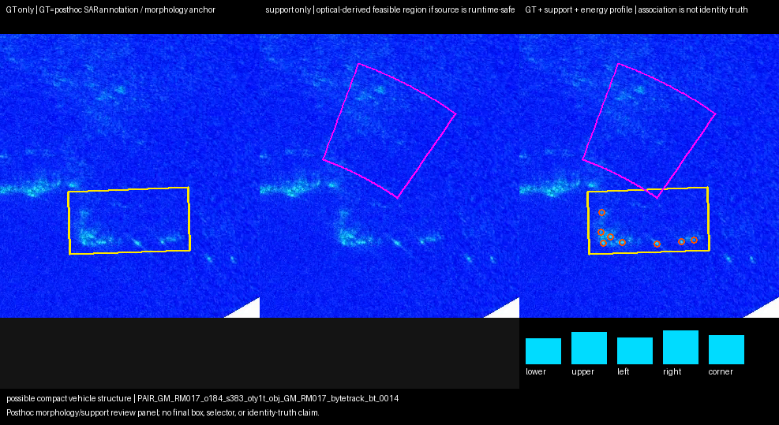
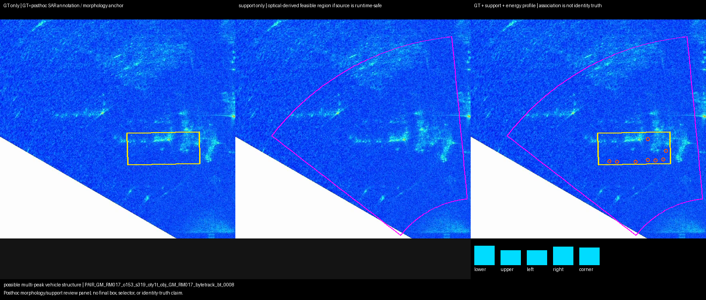
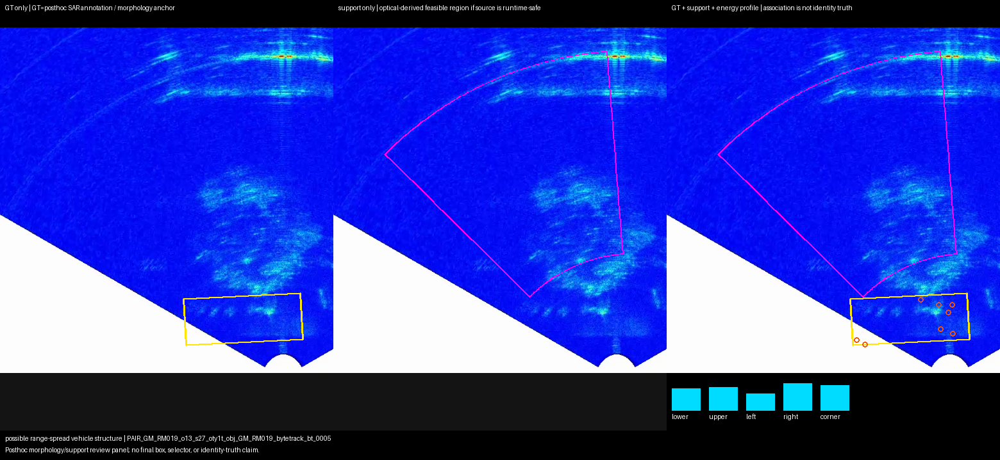
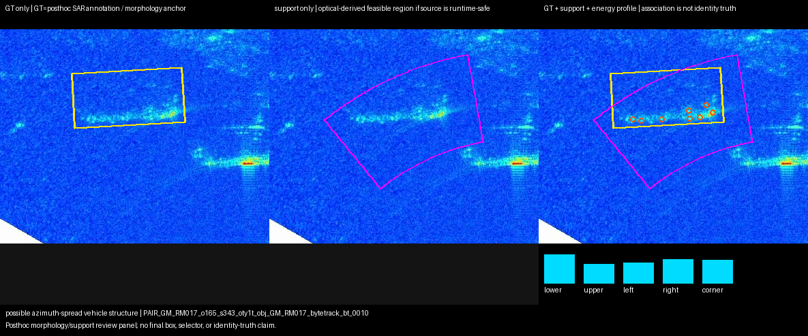
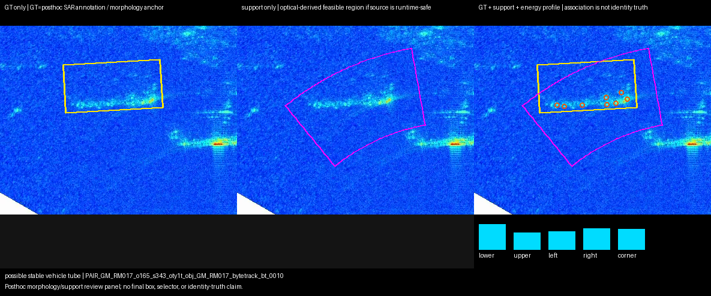
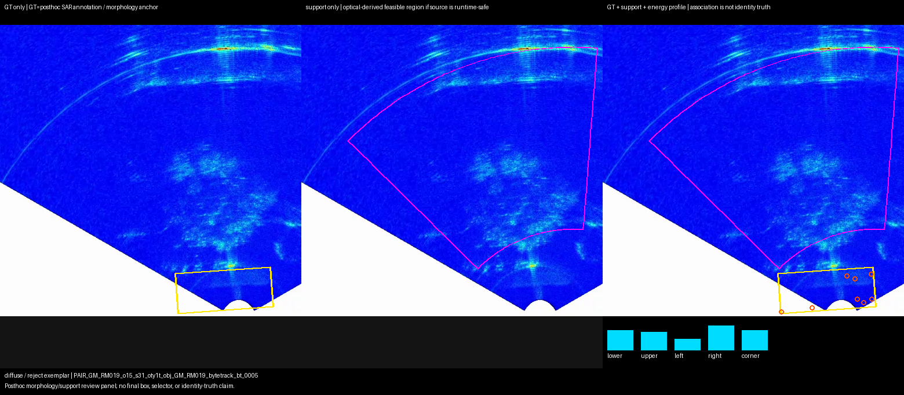
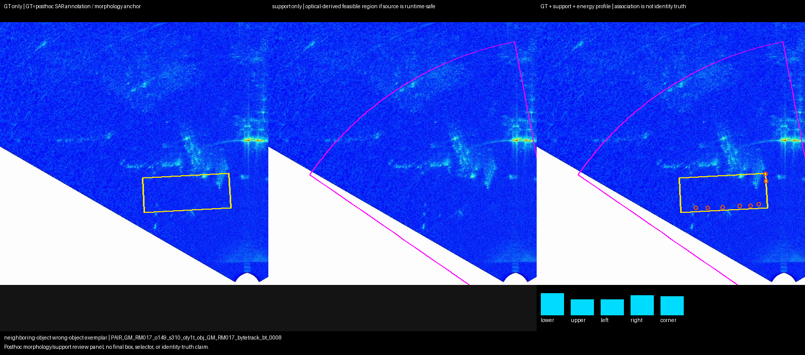
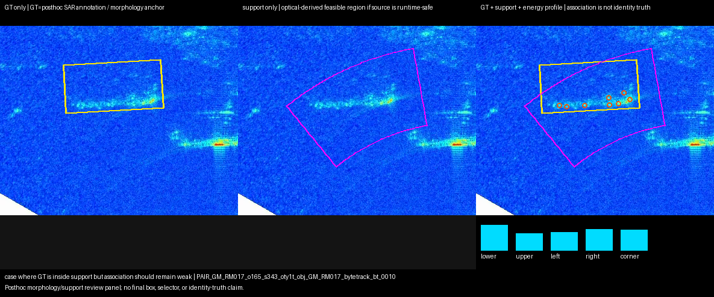
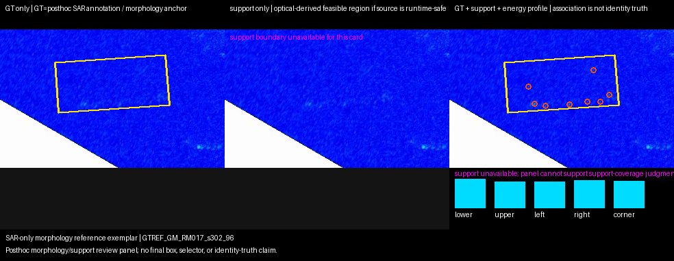
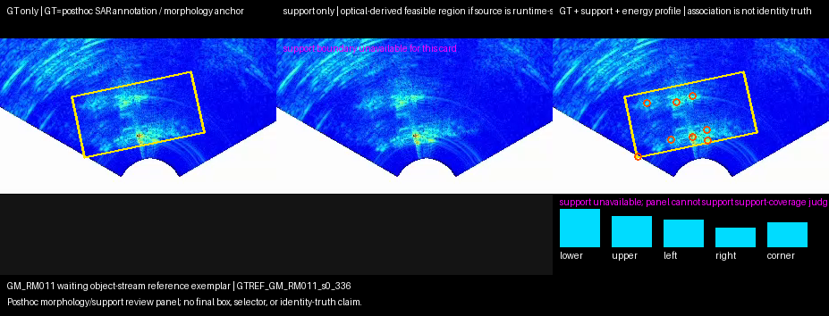

1. possible compact vehicle structure
PAIR_GM_RM017_o184_s383_oty1t_obj_GM_RM017_bytetrack_bt_0014

compact_cluster observed inside support
GT is posthoc SAR annotation / morphology anchor. Support is reconstructed from existing optical-derived sector/range fields when available. Energy profile is SAR observation diagnostic. Association state is not identity truth.
PAIR_GM_RM017_o184_s383_oty1t_obj_GM_RM017_bytetrack_bt_0014

compact_cluster observed inside support
PAIR_GM_RM017_o153_s319_oty1t_obj_GM_RM017_bytetrack_bt_0008

multi_peak_nearby_cluster observed
PAIR_GM_RM019_o13_s27_oty1t_obj_GM_RM019_bytetrack_bt_0005

range_spread_cluster observed
PAIR_GM_RM017_o165_s343_oty1t_obj_GM_RM017_bytetrack_bt_0010

azimuth_spread_cluster dominates current state-conditioned support
PAIR_GM_RM017_o165_s343_oty1t_obj_GM_RM017_bytetrack_bt_0010

stable_cluster_tube appears in observation
PAIR_GM_RM019_o15_s31_oty1t_obj_GM_RM019_bytetrack_bt_0005

diffuse_clutter observed
PAIR_GM_RM019_o13_s27_oty1t_obj_GM_RM019_bytetrack_bt_0005
temporal instability or wrong-frame risk
PAIR_GM_RM017_o149_s310_oty1t_obj_GM_RM017_bytetrack_bt_0008

SAR structure exists but optical object ambiguous
PAIR_GM_RM017_o165_s343_oty1t_obj_GM_RM017_bytetrack_bt_0010
azimuth-spread plus posthoc hit
PAIR_GM_RM017_o165_s343_oty1t_obj_GM_RM017_bytetrack_bt_0010
vehicle-like structure exists but unique isolation is false
PAIR_GM_RM017_o165_s343_oty1t_obj_GM_RM017_bytetrack_bt_0010

GT is inside support but association remains weak
GTREF_GM_RM017_s302_96

SAR-only morphology reference
GTREF_GM_RM011_s0_336

GM_RM011 waiting object-stream SAR reference